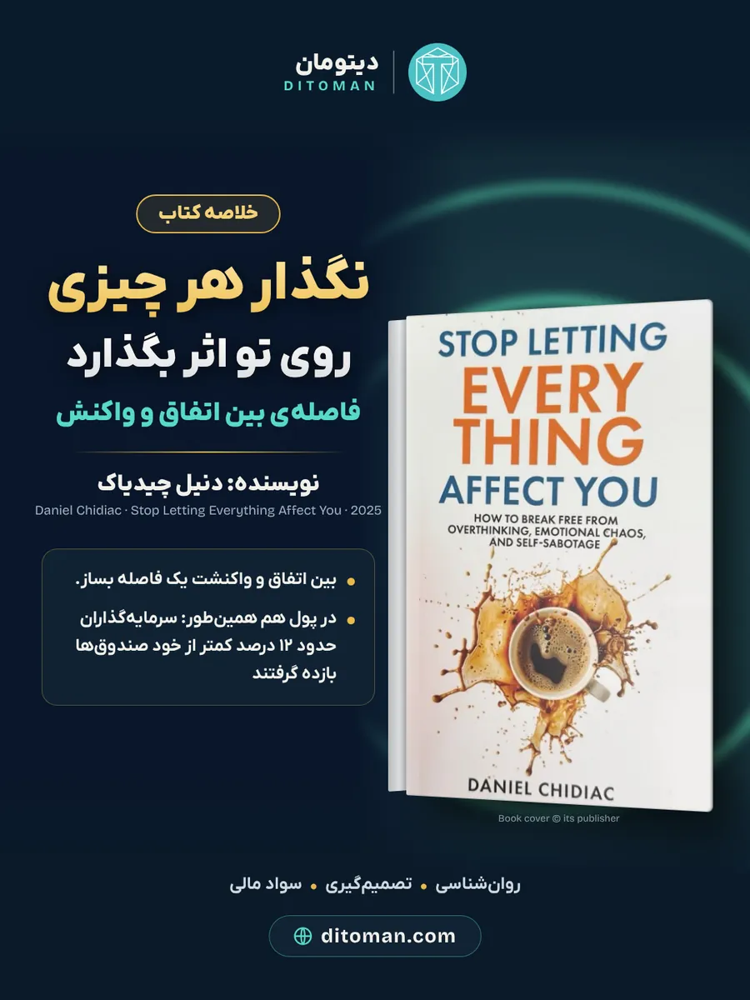
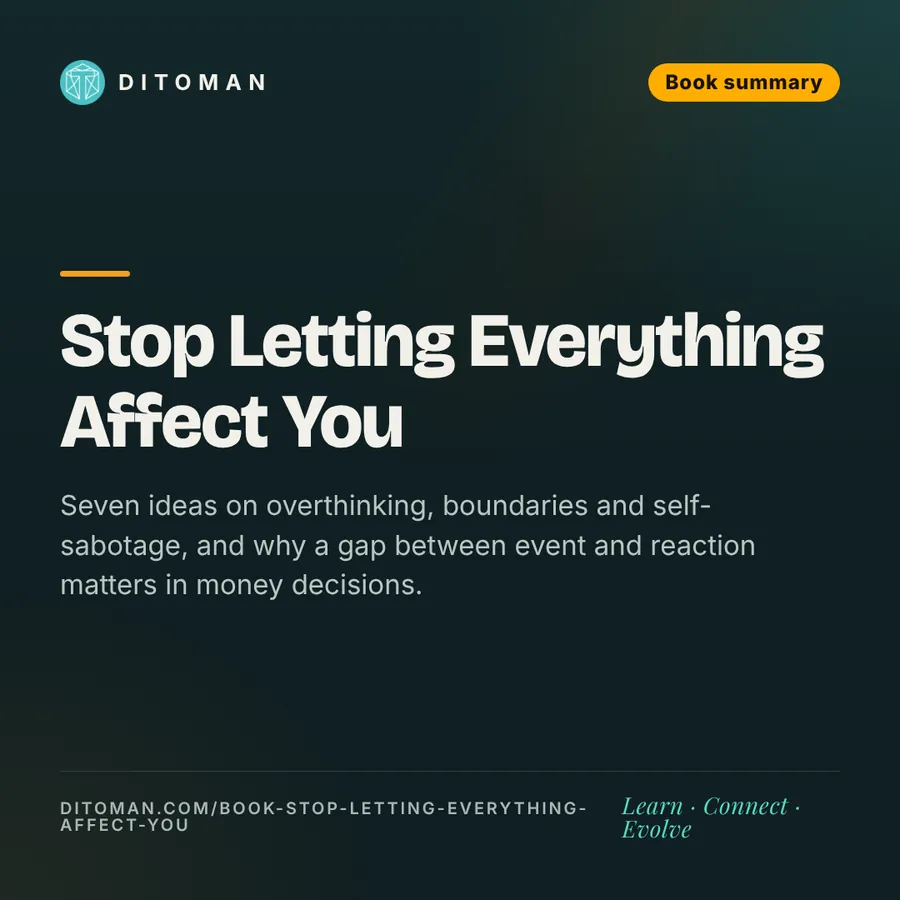

خلاصه کتاب «نگذار هر چیزی روی تو اثر بگذارد»؛ فاصلهی بین اتفاق و واکنش
Book summary: Stop Letting Everything Affect You, the gap between event and reaction
هفت ایدهی کتاب دنیل چیدیاک دربارهی بیشفکری، مرزبندی و خودتخریبی؛ و اینکه چرا همین مهارت در تصمیمهای مالی ارزش دارد.
Seven ideas from Daniel Chidiac on overthinking, boundaries and self-sabotage, and why the same skill matters in money decisions.
1. در یک نگاه
| مشخصه | توضیح |
|---|---|
| نام کتاب | Stop Letting Everything Affect You: How to Break Free from Overthinking, Emotional Chaos, and Self-Sabotage |
| ترجمهی عنوان | نگذار هر چیزی روی تو اثر بگذارد؛ رهایی از بیشفکری، آشفتگی عاطفی و خودتخریبی |
| نویسنده | دنیل چیدیاک (Daniel Chidiac) |
| انتشار | ژوئیهی ۲۰۲۵؛ ناشر: Undercover Publishing House |
| موضوع | رشد فردی، مدیریت احساسات، مرزبندی و بیشفکری |
ایدهی اصلی در یک جمله: مسئله همیشه خودِ اتفاق نیست؛ مسئله این است که بین اتفاق و واکنشمان فاصلهای باشد یا نه.
این صفحه خلاصه و تحلیل دیتومان است، نه متن کتاب. فهرست فصلهای کتاب در منابع عمومی منتشر نشده است؛ بنابراین خلاصه بر پایهی معرفی رسمی ناشر و موضوعهایی است که ناشر برشمرده. مثالها و بخش مالی از دیتوماناند، نه از نویسنده.
2. صحنهی آشنا
صبح با انرژی بیدار میشوی. بعد پیامی بیپاسخ میماند، همکاری انتقادی میکند یا خبری برخلاف انتظارت میرسد. ذهن شروع میکند: چرا این را گفت؟ منظورش چه بود؟ من اشتباه کردهام؟
چند ساعت بعد، اتفاقی که چند دقیقه طول کشیده بود هنوز ذهنت را اشغال کرده است. کتاب دربارهی همین لحظه است: چرا گاهی اجازه میدهیم اتفاقهای کوچک، تمام روز و گاهی تصمیمهایمان را تعیین کنند؟
3. هفت ایدهی اصلی
- ۱. واقعیت را از داستان ذهن جدا کن: دوستت جواب نداده؛ این واقعیت است. «ناراحت شده» یا «دیگر علاقه ندارد» داستانی است که ذهن میسازد. روانشناسان به بازگشت بیپایان به فکرهای ناراحتکننده «نشخوار فکری» میگویند. تمرین ساده: بپرس «چه چیزی واقعاً اتفاق افتاده و کدام بخش برداشت من است؟»
- ۲. همهچیز در کنترل ما نیست: میتوانیم برای مصاحبه آماده شویم، اما تصمیم کارفرما دست ما نیست. نگرانی زمانی زیاد میشود که انرژیمان را صرف چیزهایی کنیم که اصلاً در اختیارمان نیستند: نظر دیگران، گذشته، نتیجهی قطعی آینده
- ۳. نه گفتن بدون احساس گناه: بسیاری چیزی را میپذیرند که توانش را ندارند، فقط برای اینکه دیگران ناراحت نشوند. نتیجه خستگی و دلخوری است. مرزبندی سالم یعنی بتوانی محدودیتت را روشن و محترمانه بگویی
- ۴. گناه واقعی یا گناهی که دیگران در ما میسازند: ناشر وعده داده کتاب این دو را از هم جدا میکند. هر گناهی دستکاری نیست؛ گاهی واقعاً اشتباه کردهایم و باید مسئولیتش را بپذیریم
- ۵. انتقاد دربارهی کار است، نه ارزش تو: «این گزارش نیاز به اصلاح دارد» با «من بیارزشم» فرق بزرگی دارد. هر انتقادی هم درست نیست؛ انصاف و شیوهی بیانش را هم باید سنجید
- ۶. خودتخریبی: کسی میخواهد کسبوکار راه بیندازد و از ترس قضاوت، هر بار شروع را عقب میاندازد. یا هدفش پسانداز است و در روزهای بد خرید هیجانی میکند. راهحل: بشناس چه موقعیتی این رفتار را روشن میکند و پیش از آن، پاسخ جایگزین بساز
- ۷. بیتفاوت نشو، فقط فاصله بگیر: فاصلهی عاطفی یعنی ناراحت شوی، اما فوراً واکنش نشان ندهی؛ نگران آینده باشی، اما تمام روز بدترین سناریو را تماشا نکنی. آرامش هم با خوشحالی دائمی فرق دارد: توانایی بازگشت به تعادل بعد از تجربهی ناخوشایند
4. نگاه دیتومان: این کتاب چه ربطی به پول دارد؟
این بخش تحلیل دیتومان است و توصیهی نویسنده دربارهی سرمایهگذاری نیست.
بازار مالی جایی است که «واکنش فوری» گران تمام میشود. گزارش سالانهی Morningstar برای ده سال منتهی به پایان ۲۰۲۵ نشان میدهد صندوقهای سرمایهگذاری آمریکا بهطور میانگین ۹٫۹ درصد در سال بازده داشتهاند؛ اما سرمایهگذارانِ آن صندوقها بهطور میانگین ۸٫۷ درصد. این یعنی ۱٫۲ واحد درصد در سال، حدود ۱۲ درصد از کل بازده، به خاطر زمان و اندازهی خرید و فروشها از دست رفته است.
Morningstar خودش تأکید میکند این فاصله لزوماً نشانهی تصمیم بد نیست؛ سرمایهگذاری منظم یا متعادلسازی هم میتواند آن را بسازد. اما الگوی روشن است: وقتی خبر یا قیمت هیجان میسازد، رفتار ما از برنامهمان جدا میشود.
| موقعیت | واکنش هیجانی | واکنش با فاصله |
|---|---|---|
| قیمت یک روز میریزد | فروش فوری از ترس | بازبینی برنامه: دلیل خرید من هنوز برقرار است؟ |
| دوستی از سودش حرف میزند | ورود شتابزده از ترس جا ماندن | بررسی ریسک و شناخت از دارایی پیش از هر قدمی |
| تیتر ترسناک میرسد | چک کردن مداوم قیمت | تفکیک واقعیت (چه شد؟) از برداشت (حالا چه میشود؟) |
| روز بد عاطفی | خرید برای حال بهتر | قانون صبر: تصمیم غیراضطراری را فردا بگیر |
برای خوانندگانی که با نوسان ارز و خبرهای پرتنش زندگی میکنند، این مهارت اهمیت بیشتری دارد: وقتی نمیتوانیم خبر را کنترل کنیم، میتوانیم واکنشمان را طراحی کنیم. دربارهی ریزشهای ناگهانی میتوانی درس «چرا قیمت یکدفعه میریزد؟» و گزارش افت بیتکوین را ببینی.
مدیریت احساسات جای تحلیل مالی را نمیگیرد، اما کمک میکند تصمیمها بر پایهی برنامه و اطلاعات باشند، نه فقط ترس یا هیجان.
5. پنج تمرین ساده
این تمرینها پیشنهاد دیتومان با الهام از موضوعهای کتاباند، نه نقل مستقیم از آن.
- واقعیت را بنویس: وقتی ناراحتکنندهای رخ داد، فقط آنچه را قطعاً میدانی بنویس
- فاصله بگذار: لازم نیست فوراً جواب بدهی؛ برای پیام و خبر بد، ده دقیقه صبر کن
- حوزهی اختیارت را بکش: از خودت بپرس کدام بخش مسئله با کار من تغییر میکند
- مرز روشن بگذار: پیش از قبول تعهد تازه، زمان و توان واقعیات را بسنج
- تصمیم بزرگ را در اوج هیجان نگیر: بهویژه در پول و کار، برای تصمیمهای غیراضطراری فرصت بازبینی بگذار
6. نقدها؛ آیا واقعاً میشود نگذاشت هیچچیز اثر بگذارد؟
- عنوان را تحتاللفظی نخوان: انسان موجودی اجتماعی و عاطفی است و اثر پذیرفتن طبیعی است. هدف، اثر نگرفتن نیست؛ انتخاب آگاهانهی واکنش است
- همهچیز با تغییر نگرش حل نمیشود: گاهی مشکل در محیط کار، فشار مالی یا رابطهی آسیبزاست و به تغییر واقعی شرایط نیاز دارد
- کتاب رشد فردی درمان نیست: اگر نگرانی یا افسردگی طولانی و سنگین است، کمک گرفتن از متخصص بهتر از تنها تکیه کردن بر کتاب است
- محدودیت این خلاصه: فهرست فصلها در دسترس نبود؛ برای جزئیات و تمرینهای خود نویسنده، کتاب اصلی را بخوان
7. برای چه کسی مفید است؟
- کسانی که با پیام، انتقاد یا خبر بد، ساعتها درگیر بیشفکری میشوند
- کسانی که در بازار مالی زیر فشار خبر و قیمت تصمیم میگیرند
- هر کسی که میخواهد بین اتفاق و واکنشش فاصله بسازد
جمعبندی دیتومان: شاید نتوانیم اتفاقهای روزمره را انتخاب کنیم، اما در بسیاری از موقعیتها میتوانیم شیوهی مواجهه را انتخاب کنیم. و در پول، همین فاصله گاهی چند درصد بازده را حفظ میکند.
پرسش پایانی: آخرین بار کدام اتفاق کوچک چند ساعت ذهن تو را گرفت؟ امروز هم به همان اندازه مهم به نظر میرسد؟
بیشتر بخوانید
- همهی خلاصه کتابهای دیتومان
- چرا قیمت یکدفعه میریزد؟
- بیتکوین نصف شد؛ چرا بازار کریپتو ریخت
- قیمت لحظهای تتر، بیتکوین و طلا
منابع
- Readings: Stop Letting Everything Affect You, Daniel Chidiac, ISBN 9781764110808
- Apple Books: Stop Letting Everything Affect You (publisher description)
- Morningstar: Mind the Gap 2026 (10 years to 31 Dec 2025)
- Morningstar: Mind the Gap research page
آخرین بازبینی: ۱ آذر ۱۴۰۵. این صفحه خلاصه و تحلیل دیتومان است و جایگزین کتاب نیست؛ تصویر جلد فقط برای معرفی کتاب آمده و حقوق آن متعلق به ناشر است.